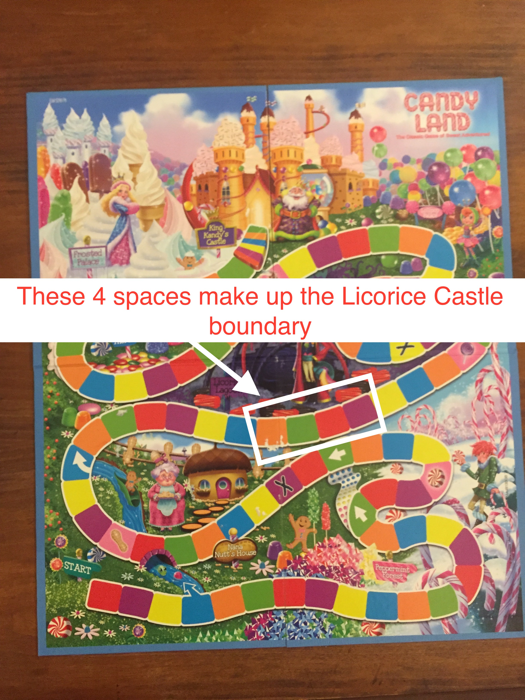

For 4 players age 12+
Welcome to Licorice Lords! A game full of chewy surprises at every turn, where strategy is essential if you are to maintain dominance of the Licorice Castle. Race to gain control before your foes, and hold down your aromatic castle for as long as you can! May the best player win.
Stay in the Licorice Castle boundary for a total of 4 turns. These 4 turns do not have to be in a row.
Shuffle the cards and place them face down near the board. Randomly determine who gets which pawn by placing the pawns into the box and shutting it. Shake the box, and have each player pick out a pawn from the box without looking. You may choose to start from either the beginning of the board, or the end. Despite the appearance of one starting point being closer to the Licorice Castle, you must consider that both paths have different weaknesses and advantages.
The youngest player goes first.
1. Draw a card and advance your pawn to the nearest space that matches the colored square on your card. If you draw a card with two colored squares, advance to the second closest space that matches the color of the squares on your card. Take turns drawing cards in order to advance to the Licorice Castle.
2. If you draw a card that matches your pawn’s color, advance and go again (If you are the blue character and you land on the river shortcut, you do not go again. This rule does not apply to whomever control's the Licorice Castle.)
3. If you land on a licorice X, immediately advance to any space in the Licorice Castle boundary.
4.If you draw a card forcing you to go past the licorice boundary, you must wait for your next turn to try and enter it from the other direction.
5. If you land in the Licorice Castle boundary when someone else is inside of the boundary, you may place their pawn 20 paces away from the boundary in either direction.
6. Once you are in the Licorice Castle boundary and start drawing cards, you have two choices:
1. You may leave the Licorice Castle boundary in either direction to the nearest color you have drawn. (This option may be useful if you realize someone else is about to enter the boundary.)
OR
2.You may choose to move any one of the other players forward or backward to the nearest space that matches the color of the card you have drawn.
7. If your pawn sits on a purple square during the Licorice Lord’s turn, they cannot move you.
8. If you draw a card with a piece of candy on it, you may choose to advance to the square that matches the image on the card or skip the next turn of whomever controls the Licorice Castle. If no one controls the Licorice Castle and you don't want to advance to the square that matches the image on the card you may stay where you are.
Have fun, and good luck!